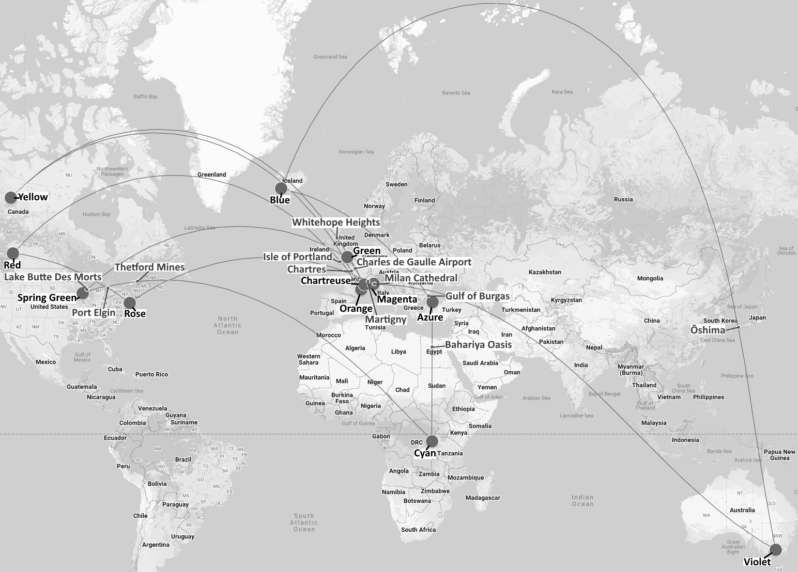

Solution: Round Trip
Answer: REPLOT BRIDGE
Written by chimpaznee
We are presented with a set of 12 images, each containing a map and some (monochrome) satellite imagery, and 12 additional text clues. Naturally, we should attempt to identify the circled locations. Each of the 12 images contains two clues to the same location. The clue on the left is a map with a pin pointing at the location of the satellite imagery. The maps can be identified as real-world locations, with many including recognizable places such as the British Isles or Great Lakes. The pictured satellite imagery can be found by zooming in on the pin location in a site such as Google Maps or satellites.pro.
Once one or more of the circled locations are identified, we should notice a common theme: All of them have a colour in their name (even though all the pictures have no colour). This is also corroborated by the flavor text. Here are the names and coordinates of all 12 coloured locations, in the order in which they are presented:
| Location | Coordinates |
|---|---|
| Azure the Bosphorus | 41.030358, 28.98832 |
| Blue Lagoon, Iceland | 63.87913, -22.44607 |
| Grande Chartreuse | 45.36352, 5.79367 |
| Cyangugu | -2.48318, 28.89637 |
| Greenwich Peninsula | 51.49226, 0.01014 |
| Magenta, Lombardy | 45.46397, 8.88463 |
| Orange, France | 44.13379, 4.80515 |
| Red Deer, Alberta | 52.26933, -113.80876 |
| Rose Hill, Manhattan | 40.74256, -73.98351 |
| Spring Green, Wisconsin | 43.17612, -90.06852 |
| Violet Town | -36.63845, 145.71724 |
| Yellowknife | 62.45224, -114.37844 |
Since the locations are presented in alphabetical order by colour, we should find a logical way to re-order them. In addition to colour, the flavor text also includes the uncommon word "wheeling". Together with "colour", this is a clue to the concept of a colour wheel. While there are multiple existing colour wheel models, the 12 colours named in the locations we found are all part of the 12-colour RGB colour wheel.
{kind=link}
This gives us a natural ordering of the coloured locations, which is also cyclic:
Red Deer, Alberta
Orange, France
Yellowknife
Grande Chartreuse
Greenwich Peninsula
Spring Green, Wisconsin
Cyangugu
Azure the Bosphorus
Blue Lagoon, Iceland
Violet Town
Magenta, Lombardy
Rose Hill, Manhattan
We should now also solve the text clues. The clues are alphabetized as well, and each of them of them clues a unique location. In clue order, these are:
| Answer | Clue |
|---|---|
| Lake Butte des Morts | The name of this body of water means "Mound of the Dead" in French. (4,5,3,5) |
| Gulf of Burgas | There are several islands in the southern part of this Black Sea bay, including St. Anastasia Island and St. Ivan Island. (4,2,6) |
| Milan Cathedral | This building, which took nearly six centuries to construct, is the largest religious building in Italy. (5,9) |
| Martigny | This city, which lies in the Rhône Valley in Switzerland, is connected by road to Chamonix in France and to Aosta in Italy. (8) |
| Bahariya Oasis | This depression in the Western Desert of Egypt, which has a major agricultural sector, includes the necropolis known as the Valley of the Golden Mummies. (8,5) |
| Chartres | This French city is the capital of the Eure-et-Loir department, and is famous for its cathedral. (8) |
| Whitehope Heights | This hill in Scotland, which rises 637 meters above sea level, lies on the border between the Dumfries and Galloway and Scottish Borders council areas. (9,7) |
| Ōshima | This island is connected to the larger island of Shikoku via the Kurushima Kaikyō Bridge. (6) |
| Isle of Portland | This island, which lies in the English Channel, is connected to Great Britain via Chesil Beach. (4,2,8) |
| Port Elgin | This Ontario town was originally named Normanton. (4,5) |
| Charles de Gaulle Airport | This place is the largest of its kind in France, and serves as the hub of Air France, the country's flag carrier. (7,2,6,7) |
| Thetford Mines | This Quebec city was founded in 1876 after the discovery of large asbestos deposits in the area. (8,5) |
Each of the clued locations lies somewhere along the path between 2 coloured locations that are adjacent on the colour wheel. The paths are all "as the crow flies" (i.e. the shortest distance between two locations on the Earth's surface).

Using the departure hours on each of the images, we should finally index into the location along the path between the pictured location and the next one in the cycle. Starting (and ending) in Red Deer, we can read out the final answer, REPLOT BRIDGE.
| Coloured location | Departure hour | Next location along the path | Letter |
|---|---|---|---|
| Red Deer, Alberta | 9 | Isle of Portland | R |
| Orange, France | 7 | Chartres | E |
| Yellowknife | 8 | Whitehope Heights | P |
| Grande Chartreuse | 5 | Charles de Gaulle Airport | L |
| Greenwich Peninsula | 14 | Lake Butte des Morts | O |
| Spring Green, Wisconsin | 4 | Thetford Mines | T |
| Cyangugu | 1 | Bahariya Oasis | B |
| Azure the Bosphorus | 9 | Gulf of Burgas | R |
| Blue Lagoon, Iceland | 4 | Ōshima | I |
| Violet Town | 11 | Milan Cathedral | D |
| Magenta, Lombardy | 6 | Martigny | G |
| Rose Hill, Manhattan | 5 | Port Elgin | E |
Author’s Notes
While the puzzle Round Trip itself went fairly straightforwardly through testing (with all testsolves not requiring hints), this answer has a rather long and gory history, with an unprecedentedly large number of ideas failing at either the writing or testing stage. It ended up being the last puzzle to be finished in the intro round.
It was originally assigned to a different author, who wanted to write a Finnish-related puzzle (since Replot Bridge is located in Finland), but for various reasons they were unable to finish the puzzle and it was eventually abandoned. After a while, we tried brainstorming some new ideas for this answer, while keeping the Finland theme. However, none of these made it, and after a puzzle of mine failed testsolving, I killed it and declared the answer "cursed" (and would like to extend my apologies to the testsolvers who had to endure that puzzle).
Thankfully, our story has a happy ending. Five days after unclaiming, I had the thought that since the answer is 12 letters long, I can use a colour wheel, which has 12 colours when you include primary, secondary and tertiary colours. I could also make this especially thematic to the intro round (as a colourless colour puzzle). I spent a while thinking of how I could incorporate the colour wheel, and a week after unclaiming the answer I tried searching for colour-related locations, and luckily there were locations for each member of the 12-colour RGB colour wheel. I then excitedly reclaimed the answer, chose the name Round Trip and went on to implement the puzzle.
And at last, the puzzle Round Trip went through internal testsolving. And these went very smoothly, with none of the testers requesting hints, and giving the puzzle a higher fun rating than my previous scrapped puzzle received. And with these done, the intro round puzzles were declared finished. I ended up being very happy with this puzzle, both with its theming and it being a geography puzzle. It's also been a very valuable lesson to me, and shows the need for better editing and idea vetting in the future. I hope that we will be able to rework some of the rejected ideas for use in future puzzles.